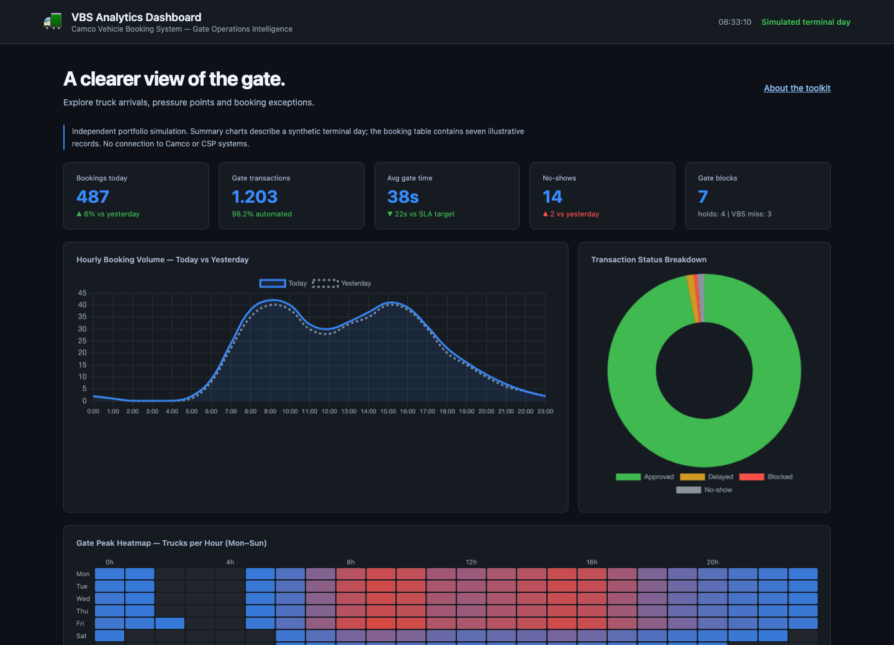

Extend the terminal system
Groovy hooks demonstrate unit validation, gate transaction interception and reefer checks. Spock specifications cover expected and exceptional paths.
Read extensions & testsA terminal is a connected system. Explore the code, analytics and reporting that turn container movements into better operational decisions.
Validate units, intercept gate events, monitor reefers.
Inspect congestion, gate times and exceptions.
Calculate KPIs and publish daily reports.

Groovy hooks demonstrate unit validation, gate transaction interception and reefer checks. Spock specifications cover expected and exceptional paths.
Read extensions & testsAn interactive browser dashboard connects booking patterns, truck peaks and gate transaction performance. Search, filter and export the sample queue.
Try VBS analyticsOracle SQL patterns and a Python report generator turn synthetic container, gate and vessel data into daily CSVs and charts.
Explore the reporting pipelineIndependent portfolio by Philippe Godfroy. All dashboard and generated-report data is synthetic. The Groovy modules model N4 extension patterns using local fixtures; actual deployment requires the licensed Navis SDK and terminal configuration. This project is not affiliated with or endorsed by CSP, Navis or Camco.